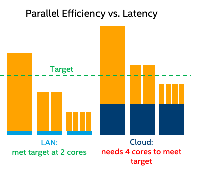

Leaving presentation mode.
Sustainability Considerations for IoT/Cloud/Edge
Michael McCool
Intel/WoT WG/WN IG
Disclaimer: Personal Opinions
- These comments are my personal opinions and do not
(necessarily) reflect positions of Intel Corp.
- My comments do, however, reflect my experience and impressions
of stakeholder opinions from the Web of Things (WoT) WG
and the Web and Networks IG (WNIG).
Outline
IoT
- Vertical use cases
- Local vs. cloud
Cloud/Edge Computing
- Compute locality
- Performance impacts of latency
Discussion
- Need for local security PKI infrastructure
- Trust model
- Distributed/Decentralized hybrids
- Sustainability Considerations and wide review
- Business models and incentives
IoT Sustainability Use Cases
Cities
- Zoning and Planning
- Logistics
- Transportation
Buildings
- Heating/Cooling Management
- Occupancy Sensors
Agriculture
Grid
- Distributed Energy
- Consumption Management
IoT Observations
- Using the cloud for local energy-saving automations can be a net loss!
- Standards are needed to support secure local communication.
- Standards and business models need to be aligned to encourage adoption.
Cloud/Edge Observations
- Communication costs energy
- Cloud has higher latency than local compute
- Latency is serial overhead
- Serial overhead limits parallel speedup
- Local/distributed (e.g. edge) computing needs a more flexible security/trust model

Discussion
- "Localizing" compute when possible can improve sustainability
- Need for local security PKI infrastructure
- Extended trust model supporting other computing resources
- "Decentralized" mechanisms can solve some of these problems...
- ...BUT need to be sustainably implemented
- Hybridize: use decentralized mechanisms only where essential
- Sustainability considerations and wide review in process?
- Business models and incentives need to be considered as well.
- A sustainable standard that is not adopted is not useful